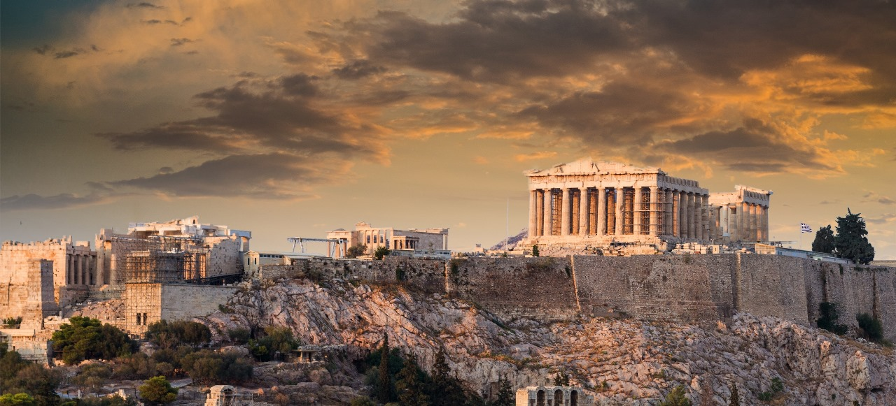

Abella | 5min read | 20-10-2023

The Acropolis of Athens stands as an enduring symbol of ancient Greek civilization and is an architectural marvel of profound historical significance. Perched atop a rocky outcrop in the heart of Athens, this UNESCO World Heritage site showcases masterpieces of classical Greek art and architecture. Dominating the complex is the Parthenon, a temple dedicated to the goddess Athena, known for its Doric columns and refined symmetry. Other structures, like the Erechtheion and the Odeon of Herodes Atticus, dot the site. The Acropolis offers panoramic views of Athens and is a testament to the ingenuity and cultural achievements of ancient Greece, making it a must-visit destination for history and architecture enthusiasts
CArchitectural Marvel: A Glimpse into Ancient Greece
The Acropolis of Athens stands as a testament to the architectural genius of ancient Greece. Perched atop a rocky hill, this sacred site boasts a remarkable assemblage of classical structures that date back to the 5th century BC. The Parthenon, an iconic temple dedicated to the goddess Athena, is the most renowned structure within the Acropolis. Its intricate Doric columns, detailed friezes, and pediment sculptures showcase the exquisite craftsmanship of the Athenian people.
Historical Significance: A Time Capsule of Antiquity
The Acropolis has a rich and storied history. It has been a center of religious worship, a fortress, and a symbol of Athenian democracy. Its strategic location provided both protection and a place for the people to gather. The Persians, under Xerxes, destroyed the Acropolis in 480 BC, but it was rebuilt to its former glory shortly thereafter. The site has witnessed the rise and fall of empires and played a pivotal role in shaping the course of Western civilization.
Cultural Heritage: A Beacon of Art and Wisdom
The Acropolis is more than just a collection of ancient buildings; it is a beacon of art and wisdom. The statues, friezes, and inscriptions found on the site provide valuable insights into the culture and values of the Athenians. These works of art celebrate the harmony of proportion and the pursuit of intellectual and philosophical enlightenment that characterized the Golden Age of Athens.
Ongoing Restoration: Preserving the Past for the Future
Preservation and restoration efforts at the Acropolis have been ongoing for many years. The Acropolis Museum, adjacent to the site, displays artifacts and sculptures removed from the Acropolis to protect them from environmental damage. Modern techniques and expertise are employed to maintain the structural integrity of these ancient marvels, ensuring that the Acropolis remains a symbol of Greece's enduring legacy for generations to come.